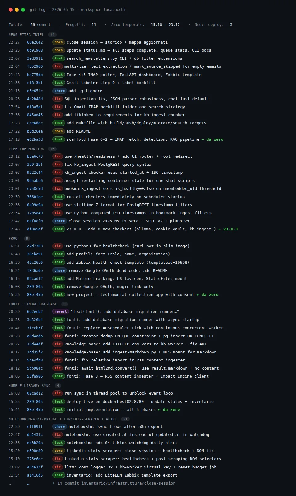
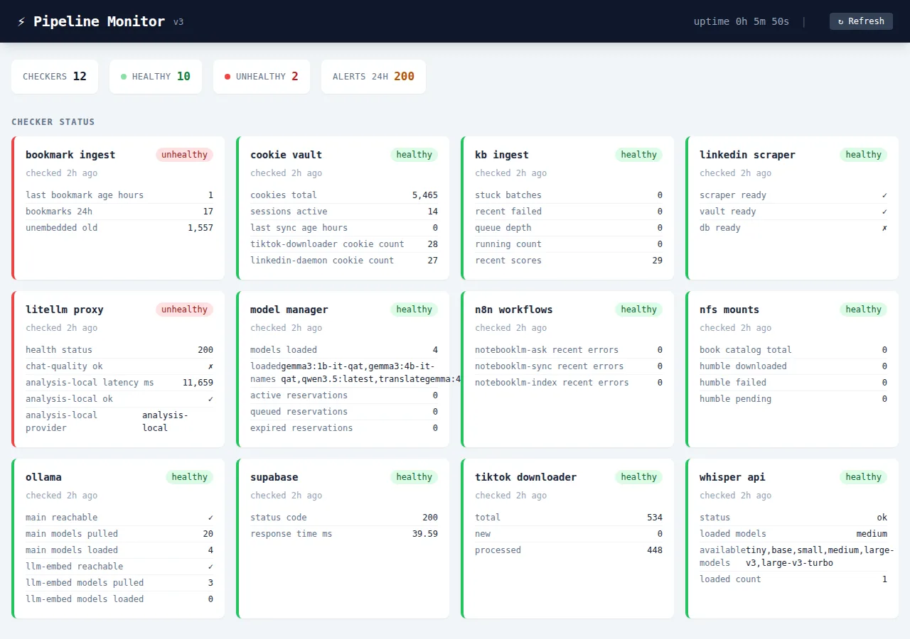
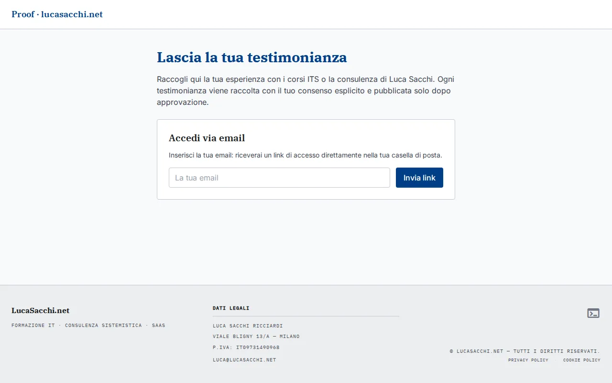

66 commits in 10 hours — this is my Claude Code workflow
Today I built three applications from scratch and deployed them to production.
I extended a monitoring system from 2 to 12 checkers.
I completed an IMAP → LLM → database → dashboard pipeline.
I made 66 commits.
All in about 10 hours, working alone.
I'm not writing this to impress anyone. I'm writing it because the question I get most often — from colleagues, students, people starting to use these tools — is: how much can you actually get done? And the honest answer is that it depends entirely on how you work with AI, not on how capable the AI is.
This article describes the workflow I use every day. With real examples from today.
The day in numbers
| Project | Activity type | Commits |
|---|---|---|
| proof | New app from scratch → production | 8 |
| newsletter-intel | Full pipeline (5 phases) from scratch → production | 14 |
| humble-library-sync | New app from scratch → deploy | 4 |
| pipeline-monitor | +8 checkers, v3.0.0 | 6 |
| fonti + knowledge-base | Impact Engine, Phase 3 | 9 |
| notebooklm-wiki-bridge | New TikTok watchdog workflow | 3 |
| Infrastructure | Inventory, Zabbix, minor fixes | 22 |
Project names like
fonti,notebooklm-wiki-bridge, andhumble-library-syncare internal homelab names. They're components of a self-hosted personal infrastructure stack, not products.
3,066 emails in the newsletter-intel queue, 303 backfilled, 0 errors at end of day. 2 Zabbix templates deployed. 3 Git repos created or updated.

These aren't demo numbers. This is real work, on real infrastructure, running in a homelab that serves production.
The core workflow: plan → review → execute
First things first: Claude Code is not a chatbot you prompt with "do this thing."
The workflow I use has three distinct phases. Skipping one is the fastest way to waste time.
1. Planning — build the plan before writing code
2. Plan review — verify before saying "go"
3. Execution — with explicit task tracking
Let's go through each one.
Planning: building the plan before writing a single line of code
Claude Code has a mode called plan mode. When I enter this mode, the AI writes no code: it explores the workspace, reads relevant files, and produces a structured plan.
The plan isn't a to-do list. It's explicit reasoning about what already exists and can be reused, what needs to be built from scratch, in what order, dependencies between pieces, and where problems are likely to surface.
This morning, for newsletter-intel, I gave a brief of about twenty lines: what kind of system I wanted, which technologies to use, where it runs, what the requirements are. Claude Code explored the workspace, read the project context files, then produced a 5-phase plan with acceptance criteria for each phase.
The plan wasn't perfect on the first pass. It had assumed the container had access to an NFS mount that wasn't actually there. It wrote it explicitly in the plan ("assuming /mnt/qnap-public/newsletter-intel is available") — and that one line let me catch and fix it before anything ran.
Practical rule: the plan should be detailed enough to surface problems before they become runtime errors. If it's too vague, it's not a plan yet.
Plan review: what I check before saying "go"
An AI-generated plan is not something you skim. I review it with a four-question mental checklist.
1. Are the assumptions correct?
Claude Code always states its assumptions. I look for the ones that touch real infrastructure: IPs, ports, credentials, file paths. Every wrong assumption here becomes a bug to debug after deploy.
2. Does the phase order make sense?
A plan that puts testing after production deploy is not a good plan. I check whether the dependencies between phases are real or artificial.
3. Is anything missing?
Plans tend to optimize for the happy path. I ask: what happens if the container doesn't start? if the DB isn't reachable? if the external API returns 429? I don't need a plan for every edge case, but the critical failure points need to be identified.
4. Is the plan atomic?
Each phase must produce something verifiable. Not "implement the backend" — but "the backend responds to /health with {"status": "ok"} and to /api/items with a JSON list." If I can't describe how to verify a phase is complete, that phase is too big.
Today for proof — the testimonial collection app — I stopped the plan after the first read because it had included Google OAuth. Google OAuth had made sense in the initial brief, but in the days before I had decided to remove it. The plan didn't know that. I corrected the brief, regenerated, and moved on.
Management: how I keep direction across multiple projects
On a day like today, I jump between 6-7 different projects. The risk is obvious: I lose the thread, start things I don't finish, end up with 3 open branches and nothing closed.
The system I use is simple.
Every project has context files in _context/: current state, history of decisions, relationships to other systems, open blockers. Before starting a session on a project, I load that context. I don't rely on the conversation for memory: the conversation ends, the file stays.
I close every session with an update. Before moving to the next project, I update status.md and storico.md. This takes 2-3 minutes and saves me from "where did I leave off?" every time I come back.
I use tasks explicitly. Claude Code maintains an active task list during the session. When a task is done, I mark it done. This prevents ending up with 4 things half-done.
I don't switch projects mid-task. If I'm in the middle of fixing a bug and a new idea surfaces, I write it down somewhere and finish what I'm doing. Context switching costs more with AI than without.
Subagents and orchestrator: when and why
This is the part most people find confusing, so I'll use a concrete example.
I have a monitoring system that checks 12 services in my homelab. It used to have 2 generic checkers. Today I extended it to 12 specific checkers, each with its own logic.

Each checker is an independent module: it reads only the data it needs, produces structured output with is_healthy and details. A scheduling orchestrator calls all of them in parallel every N seconds and aggregates the results into a single status.
Why this architecture?
First: each checker is better at what it does than a generalist checker. If I ask a single agent to check everything, it optimizes for speed and cuts corners. If I have a specialized checker for litellm_proxy, that checker knows exactly which endpoints to test and what the values mean.
Second: I can fix one piece without redoing everything. If the bookmark_ingest checker has a bug in the threshold logic, I fix it there. The rest stays.
Third: the parallelism is real. Checkers don't depend on each other. They run in parallel. With a single sequential process, one slow checker would block all the others.
Same pattern with my brand copy system: an orchestrator receives the campaign brief, breaks it down, and delegates to specialized subagents — one for big ideas, one for headlines, one for bullet points. Each applies its specific framework, produces structured output, and the orchestrator assembles the final result.
When NOT to use subagents:
- Simple tasks that a single agent solves in one pass
- When phases are so dependent that parallelism is impossible
- When the coordination overhead exceeds the benefit
If a task requires less than 20 minutes of sequential work, I use a single agent. Building a subagent architecture for something small is work that doesn't need doing.
What didn't work
It would be dishonest not to mention this.
Environment variables. Every new container has its own env vars, and every time one is missing the container misbehaves or produces silent errors. Today kb-worker was returning 401 on every LiteLLM call because LITELLM_API_KEY wasn't in the docker-compose. The debug took 15 minutes.
Docker build latency. Every cycle of modify → build → test → deploy takes 3-5 minutes. Over a day of 66 commits, that's real time.
The revert. I had to revert a commit on fonti because a migration runner introduced unexpected behavior at startup. The revert itself took 2 minutes, but identifying the problem took 20. Claude Code doesn't make fewer mistakes than humans on startup edge cases. It makes different mistakes.
Cross-session memory. The AI doesn't remember the previous session. Every time I have to reload context. The context files exist exactly for this — but it requires discipline to keep them up to date.
What remains after 10 hours

Three applications in production with active monitoring. A complete data pipeline from scratch to production. A monitoring system extended from 2 to 12 checkers. 66 atomic commits with Conventional Commit messages. Updated documentation for every project touched.
What hasn't changed: you still need to understand what you're building. You still need to design before implementing. You still need to review the plan before executing it. You still need to know how the infrastructure works.
Claude Code doesn't replace technical skill. It multiplies it — but only if there's something to multiply.
If you work with AI, infrastructure or homelabs and find this kind of content useful, follow me on LinkedIn where I post regularly.